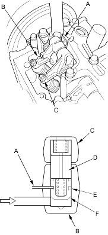
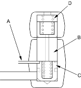
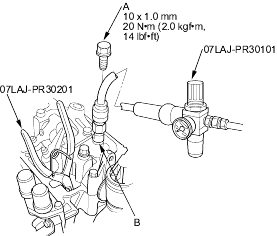

- Loosen the valve on the regulator and apply the specified air pressure.
Specified Air Pressure:
250 kPa (2.5 kgf/cm2, 36 psi)
- With the specified air pressure applied, push up the timing plate (A); the synchronising piston will pop out and engage the intake primary rocker arm (B) and intake secondary rocker arm (C).
NOTE:
- The synchronising piston (D) can be seen in the gap between the secondary and primary rocker arms.
- When the timing plate is engaged in the groove A (E) on the timing piston (F), the piston will be locked in the pushed out piston.

- Stop applying air pressure and push up the timing plate (A); the synchronising piston (B) will return to its original position with a click.
Visually check the disengagement of the synchronising piston. Replace the intake rocker arms as an assembly if there is any abnormality.
NOTE: When the timing plate is pushed up, it releases the timing piston (C), letting the return spring (D) move the synchronising piston to its original positions.

- Remove the valve inspection set from the inspection hole A, then tighten the sealing bolt.
- Remove the sealing bolt (A) from the inspection hole B (B) and connect the valve inspection set.
